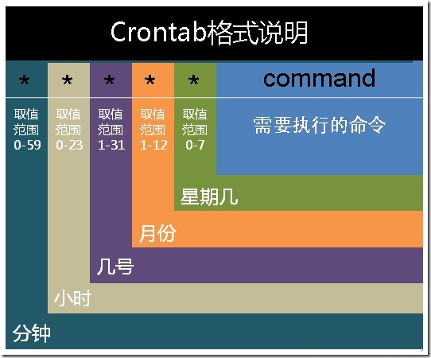

1. crontab的使用
crontab命令是cron table的简写，它是cron的配置文件，也可以叫它作业列表。
相关配置文件如下：
- /var/spool/cron/ 目录下存放的是每个用户包括root的crontab任务，每个任务以创建者的名字命名
- /etc/crontab 这个文件负责调度各种管理和维护任务。
- /etc/cron.d/ 这个目录用来存放任何要执行的crontab文件或脚本。
- 还可以把脚本放在/etc/cron.hourly、/etc/cron.daily、/etc/cron.weekly、/etc/cron.monthly目录中，让它每小时/天/星期、月执行一次。
命令格式：
crontab [ -u user ] { -l | -r | -e }
//省略用户表表示操作当前用户的crontab
-e (编辑工作表)
-l (列出工作表里的命令)
-r (删除工作表)
crontab -e进入当前用户的工作表编辑，是常见的vim界面。每行是一条命令。
crontab的命令构成为 时间+动作，其时间有分、时、日、月、周五种，操作符有
- * 取值范围内的所有数字
- / 每过多少个数字
- - 从X到Z
- ，散列数字
基本格式 :
f1 f2 f3 f4 f5 command
分 时 日 月 周 命令
第1列表示分钟0～59 每分钟用*或者 */1表示
第2列表示小时0～23（0表示0点）
第3列表示日期1～31
第4列表示月份1～12
第5列标识号星期0～6（0表示星期天）
第6列要运行的命令

- 其中 f1 是表示分钟，f2 表示小时，f3 表示一个月份中的第几日，f4 表示月份，f5 表示一个星期中的第几天。command表示要执行的命令。
- 当 f1 为 时表示每分钟都要执行 program，f2 为 时表示每小时都要执行程序，以此类推
- 当 f1 为 a-b 时表示从第 a 分钟到第 b 分钟这段时间内要执行，f2 为 a-b 时表示从第 a 到第 b 小时都要执行，以此类推
- 当 f1 为 /n 时表示每 n 分钟个时间间隔执行一次，f2 为 /n 表示每 n 小时个时间间隔执行一次，以此类推
- 当 f1 为 a, b, c,... 时表示第 a, b, c,... 分钟要执行，f2 为 a, b, c,... 时表示第 a, b, c...个小时要执行，以此类推
在 12 月内, 每天的早上 6 点到 12 点，每隔 3 个小时 0 分钟执行一次 /usr/bin/backup
0 6-12/3 * 12 * /usr/bin/backup
周一到周五每天下午 5:00 寄一封信给 alex@domain.name
0 17 * * 1-5 mail -s "hi" alex@domain.name < /tmp/maildata
每月每天的午夜 0 点 20 分, 2 点 20 分, 4 点 20 分....执行 echo "haha"
20 0-23/2 * * * echo "haha"
示例1：
45 4 1,10,22 * * /etc/init.d/smb restart 每月1、10、22日的4 : 45重启smb
10 1 * * 6,0 /etc/init.d/smb restart 每周六、周日的1 : 10重启smb
0,30 18-23 * * * /etc/init.d/smb restart 每天18 : 00至23 : 00之间每隔30分钟重启smb
0 23 * * 6 /etc/init.d/smb restart 每星期六的晚上11 : 00 pm重启smb
* */1 * * * /etc/init.d/smb restart 每一小时重启smb
* 23-7/1 * * * /etc/init.d/smb restart 晚上11点到早上7点之间，每隔一小时重启smb
示例2：
0 */2 * * * /sbin/service httpd restart 每两个小时重启一次apache
50 7 * * * /sbin/service sshd start 每天7：50开启ssh服务
50 22 * * * /sbin/service sshd stop 每天22：50关闭ssh服务
0 0 1,15 * * fsck /home 每月1号和15号检查/home 磁盘
1 * * * * /home/bruce/backup 每小时的第一分执行 /home/bruce/backup这个文件
00 03 * * 1-5 find /home "*.xxx" -mtime +4 -exec rm {} \; 每周一至周五3点钟，在目录/home中，查找文件名为*.xxx的文件，并删除4天前的文件。
30 6 */10 * * ls 每月的1、11、21、31日是的6：30执行一次ls命令
2. 环境变量问题
有时创建了一个crontab，但是这个任务却无法自动执行，而手动执行这个任务却没有问题，这种情况一般是由于在crontab文件中没有配置环境变量引起的。
所以注意如下3点：
1）脚本中涉及文件路径时写全局路径；
2）脚本执行要用到java或其他环境变量时，通过source命令引入环境变量，如：
cat start_cbp.sh
#!/bin/sh
source /etc/profile
export RUN_CONF=/home/d139/conf/platform/cbp/cbp_jboss.conf
/usr/local/jboss-4.0.5/bin/run.sh -c mev &
3）当手动执行脚本OK，但是crontab死活不执行时，可以尝试在crontab中直接引入环境变量解决问题。如：
0 . /etc/profile;/bin/sh /var/www/java/audit_no_count/bin/restart_audit.sh